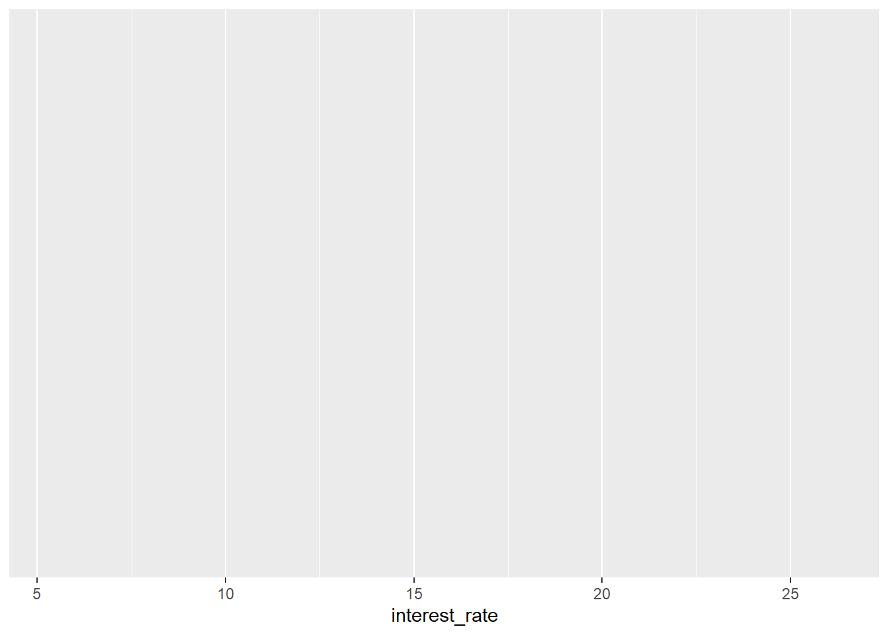
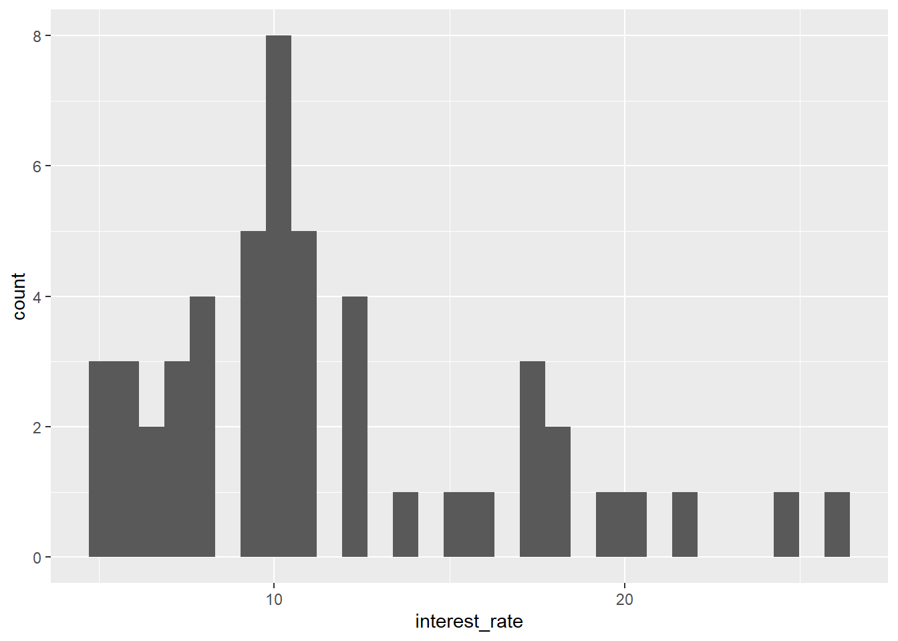
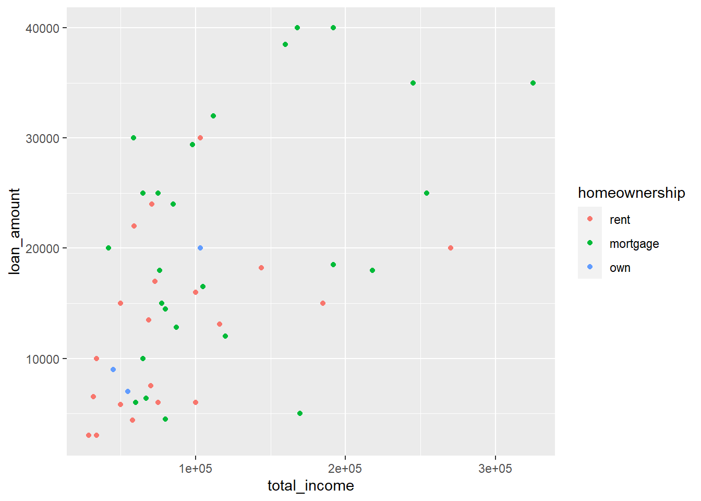
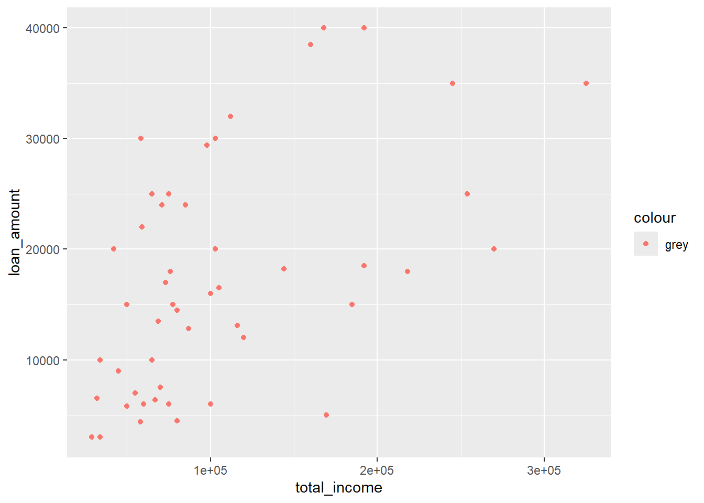
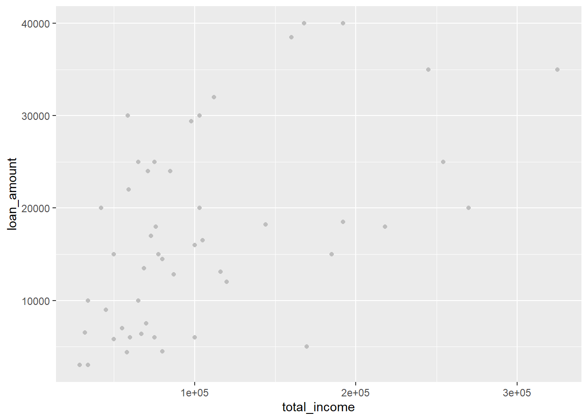

# Load required packages
library(openintro)
library(tidyverse)
library(rio)Bijlage A — Veelgemaakte fouten in R
Opmerking
Dit document wordt regelmatig bijgewerkt op basis van feedback van studenten uit zowel Leiden als Den Haag, en is daarom vooralsnog alleen in het Engels beschikbaar.
This overview documents some of the most common errors made in writing R code. If you are unsure where to look, try to search this document for any error message you get (using CRTL/CMD + F).
A.1 Top-5 errors
A.2 Syntax errors
A.2.1 Upper and lower case
R is case sensitive, which means that upper and lower case are not interchangeable:
x <- c(1,2,3,4,5)
Mean(x) # Won't work, because the function mean starts with a lower case mError in Mean(x): could not find function "Mean"Fix by using the correct case:
x <- c(1,2,3,4,5)
mean(x)[1] 3Variable names are also case-sensitive:
MyVariable = "Hello"
print(myvariable) # Object not found, because we're using lower case hereError in eval(expr, envir, enclos): object 'myvariable' not foundFix by using the correct case:
print(MyVariable)[1] "Hello"A.2.2 Incomplete code
A very common error by users is to not close a bracket. R needs ‘complete statements’ and if you execute ‘incomplete’ code with Enter/Return, R will not know where the command ends.
# In this example a bracket is missing in the end and R will therefore assume the code is incomplete and wait
((4+5)/(6 + 3) * 2If you run this code, you will not get an error message but R will simply ‘wait’ for the rest and indicate this with a + sign. For example, in the example above, you will see the following output in the console:
> ((4+5)/(6 + 3) * 2
+In this case you can either write the missing part, i.e. the closing bracket, in the console (the window below) and click Enter/Return or, alternatively, click in the console and use the ‘Escape’ button (which will reset the console). You can then enter new (complete) code.
A.2.3 Annotation errors
If you place code that you want R to execute behind an annotation, it will not run:
# I am annotating this: x <- c(1,2,3,4)Fix:
# I am annotating this
x <- c(1,2,3,4)The same is true for annotation in a pipe:
x <- c(1,2,3,4)
x |>
mean() # annotation hello |>[1] 2.5 sqrt()Error in sqrt(): 0 arguments passed to 'sqrt' which requires 1Fix:
x <- c(1,2,3,4)
x |>
mean() |> # annotation hello
sqrt()[1] 1.581139A.2.4 Forgetting quotation marks around a character vector
Remember that text (character vectors, also called strings) requires quotation marks around it:
my_text <- Hello, this won't workError: <text>:1:17: unexpected ','
1: my_text <- Hello,
^We normally use double quotation marks ("), but single quotation marks will also work ('):
my_text <- "Hello, this works"
my_text2 <- 'Hello, this also works'A.2.5 Too many or too few brackets or quotation marks
Every bracket (() and every quotation mark (") needs to be closed (once):
x <- c(1,2,3,4Error: <text>:2:0: unexpected end of input
1: x <- c(1,2,3,4
^y <- "HelloError: <text>:1:6: unexpected INCOMPLETE_STRING
1: y <- "Hello
^x <- c(1,2,3,4))Error: <text>:1:16: unexpected ')'
1: x <- c(1,2,3,4))
^y <- "Hello""Error: <text>:1:13: unexpected INCOMPLETE_STRING
1: y <- "Hello""
^z <- "You cannot put a "string" inside a string"Error: <text>:1:25: unexpected symbol
1: z <- "You cannot put a "string
^If you get unexpected symbol errors, it is often for this reason.
If you have a text with a double quotation mark in it, put \ before it (this is called ‘escaping’, so R means that you mean to write a quotation mark and not announce the end of the character variable):
my_text <- "Is it \"normal\" to like R?"
cat(my_text)Is it "normal" to like R?A.2.6 The difference between = and ==
People often confuse = and ==:
data("starwars")
starwars |>
mutate(height_inch == height / 2.54)Error in `mutate()`:
ℹ In argument: `height_inch == height/2.54`.
Caused by error:
! object 'height_inch' not foundHere we used two equal signs where one should be used. R thinks we are trying to make a comparison with height_inch (and throws an error, because it doesn’t exist) when we are trying to create a new variable called height_inch.
data("starwars")
starwars |>
filter(height = 150)Error in `filter()`:
! We detected a named input.
ℹ This usually means that you've used `=` instead of `==`.
ℹ Did you mean `height == 150`?Here we used a single equal sign, where we should have put two. In this case R recognizes the potential error and suggests that we need to two equal signs. Thanks R!
Remember:
One equal sign (
=) is used to assign a variable, for example inmutate:dta |> mutate(new_variable = old_variable + 10)Two equal signs (
==) are used when comparing or conditioning, for example infilterorcase_when:dta |> filter(height == 200)
A.3 Package errors
A.3.1 Function not found
Phi(data$econ, data$oecd)Error in Phi(data$econ, data$oecd): could not find function "Phi"We try to run a function, but R says it could not find it.
Have you loaded the package that contains this function? In this example:
library(DescTools)Did you spell the function name correctly, including the use of upper and lower case?
Is this a custom function that is part of your code? You need to select and run the code that defines the function before referencing this function.
A.3.2 Conflicting functions
If you load multiple packages which have functions with the same name, this can lead to conflicts. Usually, the last package loaded ‘masks’ functions with the same name from previously loaded packages. R will warn you about this when loading the packages, but you may not always be aware and as a result the wrong function is used.
# Load tidyverse first, then expss
library(tidyverse)
library(expss)
# Create an example data frame with one variable 'test'
dta <- tibble(test = letters[1:5])
# Try to call recode (from dplyr), but this is masked by recode from expss
dta |>
mutate(test2 = recode(test, "a" = "b"))Error in `mutate()`:
ℹ In argument: `test2 = recode(test, a = "b")`.
Caused by error in `FUN()`:
! 'recode': all recodings should be formula but: "b"There are various ways to address this problem:
- Load the packages in the correct order, i.e. the last package is the one that you need any conflicting functions from:
library(expss)
library(tidyverse)- Use
packagename::functioninstead of just the function name:
# We specify that we want to use recode from dplyr by writing dplyr::recode
dta |>
mutate(test2 = dplyr::recode(test, "a" = "b"))# A tibble: 5 × 2
test test2
<chr> <chr>
1 a b
2 b b
3 c c
4 d d
5 e e - Detach a package you no longer need, for example:
detach("package:expss", unload = TRUE)
# Now there is no more conflict
dta |>
mutate(test2 = recode(test, "a" = "b"))# A tibble: 5 × 2
test test2
<chr> <chr>
1 a b
2 b b
3 c c
4 d d
5 e e A.4 File errors
A.4.1 File not found / No such file
If R cannot find a file you are trying to open:
import("file.csv")Error: No such file: file.csvCheck for typos and use of UPPER and lower case.
Did you include the correct file extension (e.g.
.csv,.sav,.por)?Does the file indeed exist and is it located in the project folder (or working directory)? Type
dir()in the Console to list the files in the current working directory. Usinggetwd()you can get the current working directory and this can be changed bysetwd(). But the best practice is to work in an R project (a folder on your computer) where all your files are located (see week 1).Perhaps the file is in a sub-folder? For example, if the file is located in a folder called data, try
import("data/file.csv").
A.5 Data preparation and transformation errors
A.5.1 Forgetting to use mutate inside case_when
When using case_when(), we must create a new variable in our recoding procedure with mutate(). Otherwise R will not know where to put the new, recoded data.
library(openintro) # This is where the data is from
gpa_study_hours <- gpa_study_hours |>
case_when(
gpa >= 3.7 ~ "A",
gpa >= 3.3 ~ "B",
gpa >= 1.7 ~ "C",
gpa >= 1.3 ~ "D",
gpa < 1.3 ~ "F")Error in `case_when()`:
! Case 1 (`gpa_study_hours`) must be a two-sided formula, not a
<tbl_df/tbl/data.frame> object.The solution is to put the case_when statement inside mutate():
library(openintro) # This is where the data is from
gpa_study_hours <- gpa_study_hours |>
mutate(grade = case_when(
gpa >= 3.7 ~ "A",
gpa >= 3.3 ~ "B",
gpa >= 1.7 ~ "C",
gpa >= 1.3 ~ "D",
gpa < 1.3 ~ "F"))A.5.2 Not assigning the result
If you perform any operation that aims to modify data in your dataset (for example filter, select, mutate, etc.), you need to assign the result. Otherwise R will just print out your modifications but not save them in memory:
example_data <- data.frame(x = c(1,2,3,4,5))
example_data |>
mutate(y = x * 2) x y
1 1 2
2 2 4
3 3 6
4 4 8
5 5 10R has printed out the result, but not saved it in example_data:
print(example_data) # No 'y', because we did not assign the result x
1 1
2 2
3 3
4 4
5 5If you want to save the result, assign it to an object:
example_data <- example_data |>
mutate(y = x * 2)
example_data # Now 'y' has been stored in 'example_data' x y
1 1 2
2 2 4
3 3 6
4 4 8
5 5 10A.5.3 Overwriting data
If you mutate a variable and save it to a variable with the same name, the original data is lost:
example_data <- data.frame(x = c(1,2,3,4,5))
example_data x
1 1
2 2
3 3
4 4
5 5example_data <- example_data |>
mutate(x = x + 10)
example_data x
1 11
2 12
3 13
4 14
5 15A.5.4 Missing data recoding using na_if: loss of generality
If you make a mistake in correctly spelling the value of a factor variable, when using the function na_if, you will get a ‘loss of generality’ error:
example_data <- data.frame(drink = as.factor(c("Tea", "Coffee", "Coffee", "Milk")))
# Suppose we would like to mark 'Coffee' as missing values, and we write
example_data |>
mutate(drink = na_if(drink, "Koffee")) # Note the spelling error in CoffeeError in `mutate()`:
ℹ In argument: `drink = na_if(drink, "Koffee")`.
Caused by error in `na_if()`:
! Can't convert from `y` <character> to `x` <factor<b5ac8>> due to loss of generality.
• Locations: 1In more simple language: R cannot find a level ‘Koffee’ in the factor variable drink and this produces an error. If we correct the spelling error, this should work:
example_data |>
mutate(drink = na_if(drink, "Coffee")) # This should work and produce missing values for the 2nd and 3rd row drink
1 Tea
2 <NA>
3 <NA>
4 MilkA.6 ggplot2 errors
A.6.1 An empty graph
Have you included a
geomlayer?Have you put a plus sign between the layers of the ggplot? (see below)
Have you inadvertently used the pipe instead of the plus sign to connect layers?
A.6.2 Forgetting the plus sign at the end of the line
If you do not include the plus sign at the end of the line, the next part of the graph is not seen as part of the current graph.
library(openintro)
data(loan50)
ggplot(data = loan50,
mapping = aes(x = interest_rate)) 
geom_histogram()geom_bar: na.rm = FALSE, orientation = NA
stat_bin: binwidth = NULL, bins = NULL, na.rm = FALSE, orientation = NA, pad = FALSE
position_stack Fix by adding the + sign at the end of the line:
library(openintro)
data(loan50)
ggplot(data = loan50,
mapping = aes(x = interest_rate)) +
geom_histogram()
A.6.3 Using |> instead of + in a ggplot
Perhaps confusingly you should use the + sign to add layers to a ggplot, not the pipe |> (or %>%). This throws an error:
library(openintro)
data(loan50)
ggplot(data = loan50,
mapping = aes(x = interest_rate)) |>
geom_histogram()Error in `geom_histogram()`:
! `mapping` must be created by `aes()`.
ℹ Did you use `%>%` or `|>` instead of `+`?Fix by replacing the pipe by a plus sign:
library(openintro)
data(loan50)
ggplot(data = loan50,
mapping = aes(x = interest_rate)) +
geom_histogram()
A.6.4 Forgetting aes()
Note that if you want to assign variables to an aesthetic (an axis, colour, shape, etc.) you need to use aes(). This won’t work:
library(openintro)
data(loan50)
ggplot(data = loan50,
x = interest_rate) +
geom_histogram()Error in `geom_histogram()`:
! Problem while computing stat.
ℹ Error occurred in the 1st layer.
Caused by error in `setup_params()`:
! `stat_bin()` requires an x or y aesthetic.Fix by including aes():
library(openintro)
data(loan50)
ggplot(data = loan50,
aes(x = interest_rate)) +
geom_histogram()
Forgetting aes() can also lead to ‘object not found’ errors, for example, when we forget to include aes() in the geom_point function:
library(openintro)
data(loan50)
ggplot(data = loan50,
mapping = aes(x = total_income, y = loan_amount)) +
geom_point(colour = homeownership)Error in eval(expr, envir, enclos): object 'homeownership' not foundR will interpret the above as setting the colour of all points to homeownership . It will look for an object called homeownership , which does not exist. You need to tell R that you are trying to map the colour of the points to the variable homeownership from the data frame you are using. Do that by putting aes() around colour = homeownership:
library(openintro)
data(loan50)
ggplot(data = loan50,
mapping = aes(x = total_income, y = loan_amount)) +
geom_point(aes(colour = homeownership))
A.6.5 Colours do not match
If you are trying to set a fixed colour for a graph element, for example grey points in a scatterplot, you should not include aes() .
library(openintro)
data(loan50)
ggplot(data = loan50,
mapping = aes(x = total_income, y = loan_amount)) +
geom_point(aes(colour = "grey"))
Instead of grey dots we get red dots! Why? Because we have told R to link the colour of the dots to a variable (or constant, really) “grey”. Think of it as adding a new variable to the dataset which has the same value for each case. R matches the first default colour (red) to use for all cases in the group (which are all cases in the graph).
Fix by removing aes():
library(openintro)
data(loan50)
ggplot(data = loan50,
mapping = aes(x = total_income, y = loan_amount)) +
geom_point(colour = "grey")
Remember: use aes() when you want to link an element of the graph to a variable in your data. If you want to just change a fixed colour, border, etc. do not use aes().
A.7 Errors in using statistical functions
A.7.1 Forgetting table() when using prop.test
When using prop.test for data in a data frame, you need to include table() around the arguments. This will not work:
# We are using variable am from mtcars which indicates if a car has automatic (0) or manual (1) transmission
prop.test(mtcars$am)Error in prop.test(mtcars$am): argument "n" is missing, with no defaultWe can fix this by putting table() around the variable(s):
# We are using variable am from mtcars which indicates if a car has automatic (0) or manual (1) transmission
prop.test(table(mtcars$am))
1-sample proportions test with continuity correction
data: table(mtcars$am), null probability 0.5
X-squared = 0.78125, df = 1, p-value = 0.3768
alternative hypothesis: true p is not equal to 0.5
95 percent confidence interval:
0.4078543 0.7578086
sample estimates:
p
0.59375